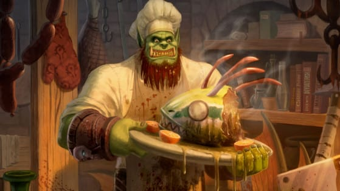

Four Classic Warcraft Recipes

Here's a few recipes from World of Warcraft Classic, along with tips on how to obtain their ingredients.
Sorted in no particular order:
Clambar
Feltail Delight
Ravager Dogs
Stormchops